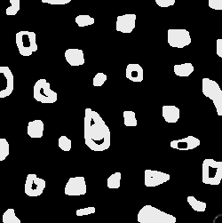
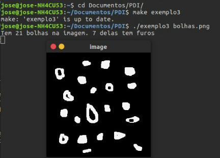
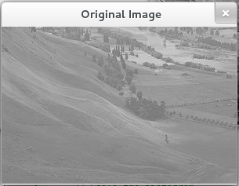
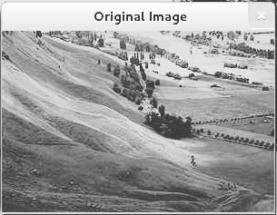
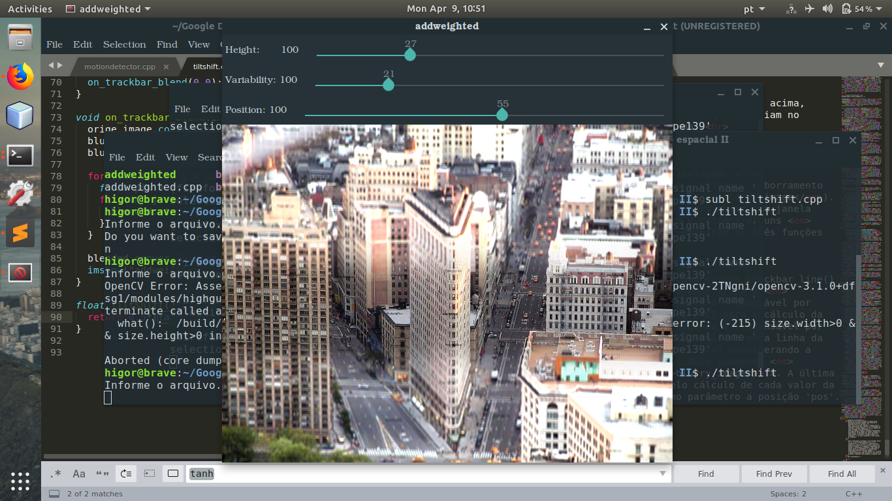

Nos foram propostos alguns problemas recorrentes na disciplina de Processamento Digital de Imagens (PDI). Em razão disso, esse site tem como objetivo colocar as resoluções dos exercícios explicando nossas ideias que regem as resoluções dos prolemas abaixo.
Exercícios
1.Exercício regions
Esse programa solicita as coordenadas de dois pontos que serão o pixel inicial da região e o final. Nessa região o programa irá fazer o negativo da imagem como na figura 1.

figura 1. Exemplo de utilização do programa regions.cpp.
#include <iostream> #include <opencv2/opencv.hpp> #include <fstream> using namespace cv; using namespace std; class Ponto{ private: int x,y; public: istream &digitar(istream &I){ I >> x; I >> y; return I; } inline int getX(){return x;} inline int getY(){return y;} }; istream &operator>>(istream &I,Ponto &P){P.digitar(I);return I;} int main(int, char**){ Mat image; Vec3b val; Ponto p1,p2; image= imread("biel.png",CV_LOAD_IMAGE_GRAYSCALE); if(!image.data) cout << "nao abriu biel.png" << endl; cout << "insira o primeiro ponto: "; cin >> p1; cout << "insira o segundo ponto: "; cin >> p2; namedWindow("janela",WINDOW_AUTOSIZE); for(int i=p1.getY();i<p2.getY();i++){ for(int j=p1.getX();j<p2.getX();j++){ image.at<uchar>(j,i) = 255 - image.at<uchar>(j,i); } } imshow("janela", image); waitKey(); return 0; }
Para fazer esse programa primeiro criamos a classe Ponto para temos um dado que armazena as coordenadas de cada ponto da região. E em seguida sobrecarregamos um operador >> para lermos os dados dos pontos mais intuitivamente.
class Ponto{ private: int x,y; public: istream &digitar(istream &I){ I >> x; I >> y; return I; } inline int getX(){return x;} inline int getY(){return y;} }; istream &operator>>(istream &I,Ponto &P){P.digitar(I);return I;}
Depois de solicitar os pontos fazemos o negativo de cada pixel da região e exibimos a imagem da seguinte forma:
for(int i=p1.getY();i<p2.getY();i++){ for(int j=p1.getX();j<p2.getX();j++){ image.at<uchar>(j,i) = 255 - image.at<uchar>(j,i); } }
2.Exercício trocaregioes
Esse programa troca as regiões da figura. Na imagem figura 2 podemos observar o resultado.
figura 2. Exemplo de utilização do programa trocaregioes.cpp.
#include <iostream> #include <opencv2/opencv.hpp> #include <algorithm> using namespace cv; using namespace std; int main(int, char**){ Mat image; Vec3b val; image= imread("biel.png",CV_LOAD_IMAGE_GRAYSCALE); if(!image.data) cout << "nao abriu biel.png" << endl; namedWindow("janela",WINDOW_AUTOSIZE); for(int i=0;i<image.cols;i++){ for(int j=0;j<(image.rows/2);j++){ if(i<=image.cols/2){ swap(image.at<uchar>(j,i),image.at<uchar>((image.rows/2)+j,(image.cols/2)+i)); } if(i>image.cols/2){ swap(image.at<uchar>(j,i),image.at<uchar>((image.rows/2)+j,i-(image.cols/2))); } } } imshow("janela", image); imwrite("labeling.png", image); waitKey(); return 0; }
Para trocar os quadrantes precisamos percorrer metade da matriz de pixels. Para fazer isso percorremos a com o comando for. Enquanto percorriamos um quadrante da matriz trocamos o primeiro pixel com o primeiro quadrante desejado, e assim para todos os pixels da imagem da seguinte forma.
for(int i=0;i<image.cols;i++){ for(int j=0;j<(image.rows/2);j++){ if(i<=image.cols/2){ swap(image.at<uchar>(j,i),image.at<uchar>((image.rows/2)+j,(image.cols/2)+i)); } if(i>image.cols/2){ swap(image.at<uchar>(j,i),image.at<uchar>((image.rows/2)+j,i-(image.cols/2))); } } }
3.Exercício labeling
Com esse programa resolvemos os dois problemas, o da quanidade de imagens e o de identificar e contar as bolhas com buracos. A figura 3 foi a imagem uttilizada no primeiro teste, já a figura 4 foi utilizada no segundo teste. Na figura 5 temos o resultado do primeiro teste, que foi feito com uma imagem com bolhas com no máximo um furo. O segundo teste foi realizado com uma bolas com dois furos e o resultado foi o mesmo da figura 5 crecentando apenas um foro em uma bolha da imagem como mostra figura 4.
 figura 3. Contém apenas bolhas com um furo.
figura 3. Contém apenas bolhas com um furo.

figura 4. Contém uma bolha com dois furos.

figura 5. Contém apenas bolhas com um furo.
#include <iostream> #include <opencv2/opencv.hpp> using namespace cv; int main(int argc, char** argv){ Mat image, im_aux, mask; int width, height; int nobjects, nfuro = 0; CvPoint p; image = imread(argv[1],CV_LOAD_IMAGE_GRAYSCALE); im_aux = imread(argv[1],CV_LOAD_IMAGE_GRAYSCALE); if(!image.data){ std::cout << "imagem nao carregou corretamente\n"; return(-1); } width=image.size().width; height=image.size().height; p.x=0; p.y=0; nobjects = 0; //removendo objetos de borda for(int i=0; i<height; i++){ for(int j=0; j<width; j++){ if((i == 0 || j == 0 || i == height-1 || j == width-1) && image.at<uchar>(i,j) == 255){ p.x=j; p.y=i; floodFill(image,p,0); floodFill(im_aux,p,0); } } } //pintando o fundo floodFill(image,p,100); for(int i=1; i<height; i++){ for(int j=1; j<width; j++){ if(image.at<uchar>(i,j) == 0 && image.at<uchar>(i-1,j-1) == 255){ // achou um furo nfuro++; p.x=j; p.y=i; floodFill(image,p,100); p.x=j-1; p.y=i-1; floodFill(image,p,100); } } } for(int i=0; i<height; i++){ for(int j=0; j<width; j++){ if(image.at<uchar>(i,j) == 255){ // achou um objeto nobjects++; p.x=j; p.y=i; floodFill(image,p,100); } } } std::cout << "Tem " << nobjects + nfuro << " bolhas na imagem. " << nfuro << " delas tem furos\n"; imshow("image", im_aux); imwrite("labeling.png", image); waitKey(); return 0; }
O primeiro passo é remover as bolhas da borda.
for(int i=0; i<height; i++){ for(int j=0; j<width; j++){ if((i == 0 || j == 0 || i == height-1 || j == width-1) && image.at<uchar>(i,j) == 255){ p.x=j; p.y=i; floodFill(image,p,0); floodFill(im_aux,p,0); } } }
O segundo passo é pintar o fundo de uma cor diferente de branco (255) e de preto (0).
floodFill(image,p,100);
O terceiro passo é encontrar as bolhas com furo, procuramos por um pixel preto precedido de um branco, já que pintamos o fundo temos a garantia de que os pixels pretos estão apenas dentro das bolhas. Após encontrar o pixel preto pintamos a regiao que ele se encontra com a cor do fundo, e pintamos também a região do pixel anterior, ou seja pintamos a bolha com a cor do fundo também. Isso nos garante contar quantas bolhas tem furos, independente de quantos furos ela tenha.
for(int i=1; i<height; i++){ for(int j=1; j<width; j++){ if(image.at<uchar>(i,j) == 0 && image.at<uchar>(i-1,j-1) == 255){ // achou um objeto nfuro++; p.x=j; p.y=i; floodFill(image,p,100); p.x=j-1; p.y=i-1; floodFill(image,p,100); } } }
Com a coloração brannca (255) restaram apenas as bolhas sem furo para ser contadas. Então contamos elas e temos todos os dados que precisamos.
for(int i=0; i<height; i++){ for(int j=0; j<width; j++){ if(image.at<uchar>(i,j) == 255){ // achou um objeto nobjects++; p.x=j; p.y=i; floodFill(image,p,100); } } }
É importante ressaltar que a imagem exibida não é a imagem que foi processada por todo o código, para a exibição da imagem criamos uma imagem auxiliar que passou apenas pelo processo de remoção dos objetos da borda.
4. Equalise.cpp
O código abaixo representa o modo de como se calcular a equaliação do histograma de uma imagem. A equalização é feita com base em uma operação sobre cada posição de um vertor de probabilidade acumulada de um histograma da imagem original. Essa operação é feita pela multiplicação do mesmo pelo valor máximo de um pixel qualquer da matriz (imagem) original. A partir disso temos, para cada valor de pixel da matriz original, o seu valor novo correspondente, o qual será dado pelo valor de uma posição do vetor final na posição da intensidade do pixel orignal da matriz.
O código ...
#include <iostream> #include <opencv2/opencv.hpp> #include <vector> using namespace cv; using namespace std; void equalizedImg(Mat &histOut, const vector<int> vet); void imHist(const Mat imageGray, vector<int>& histogram); void calcProbHist(const vector<int> histogram, vector<float>& probHist, const int amountPix); void calcProbCumHist(const vector<float> probHist, vector<float>& probHistCum); void calcEqualizedHist(const vector<float> probHistCum, vector<int>& equalizedHist, const float maxIntensity); int main(int argc, char** argv){ Mat imageRGB, imageGray, imageAux; Mat histAcum(); VideoCapture cap; vector<int> histogram (256, 0); float maxIntensity = 255.0; vector<float> probHist (256); vector<float> probHistCum (256); vector<int> equalizedHist(256); cap.open(0); if(!cap.isOpened()){ cout << "cameras indisponiveis"; return -1; } int width = cap.get(CV_CAP_PROP_FRAME_WIDTH); int height = cap.get(CV_CAP_PROP_FRAME_HEIGHT); int amountPix = width*height; while(1){ cap >> imageRGB; cvtColor(imageRGB,imageGray,CV_RGB2GRAY); imHist(imageGray,histogram); calcProbHist(histogram,probHist,amountPix); calcProbCumHist(probHist,probHistCum); calcEqualizedHist(probHistCum,equalizedHist,maxIntensity); imageAux = imageGray.clone(); equalizedImg(imageAux,equalizedHist); imshow("equalized_image", imageAux); imshow("original_image", imageGray); if(waitKey(30) >= 0) break; } return 0; } void imHist(const Mat imageGray, vector<int>& histogram){ for (int i = 0; i < imageGray.cols; ++i) for (int j = 0; j < imageGray.rows; ++j) histogram[(int)imageGray.at<uchar>(i,j)]++; } void calcProbHist(const vector<int> histogram, vector<float>& probHist, const int amountPix){ for (int i = 0; i < histogram.size(); ++i){ probHist[i] = histogram[i]/((float)amountPix); } } void calcProbCumHist(const vector<float> probHist, vector<float>& probHistCum){ probHistCum[0] = probHist[0]; for (int i = 1; i < probHist.size(); ++i){ probHistCum[i] = probHistCum[i-1] + probHist[i]; } } void calcEqualizedHist(const vector<float> probHistCum, vector<int>& equalizedHist, const float maxIntensity){ for (int i = 0; i < probHistCum.size(); ++i){ equalizedHist[i] = cvRound(probHistCum[i]*maxIntensity); } } void equalizedImg(Mat &histOut, const vector<int> vet){ for (int y = 0; y < histOut.cols; ++y){ for (int x = 0; x < histOut.rows; ++x){ histOut.at<uchar>(x,y) = vet[(int)histOut.at<uchar>(x,y)]; } } }
Detalhes do programa:
Em primeiro lugar declaramos todas as variáveis que usaremos durante o program: matrizes 'imageRGB', 'imageGray', entre outras imagens. Além de imagens, nós declaramos também a variável 'cap' do tipo VideoCapture para fazer a captura de cada imagem da câmera e depois declaramos os vetores que armazenarão os histogramas e suas variações.
Após isso tudo, tambéḿ verificamos se a câmera foi aberta e, caso positivo, armazenamos os valores do tamanho das imagens nas variáveis 'width' e 'height', pegando também a quantidade de pixeis da imagem por 'amountPix'.
Mat imageRGB, imageGray, imageAux; Mat histAcum(); VideoCapture cap; vector<int> histogram (256, 0); float maxIntensity = 255.0; vector<float> probHist (256); vector<float> probHistCum (256); vector<int> equalizedHist(256); cap.open(0); if(!cap.isOpened()){ cout << "cameras indisponiveis"; return -1; } int width = cap.get(CV_CAP_PROP_FRAME_WIDTH); int height = cap.get(CV_CAP_PROP_FRAME_HEIGHT); int amountPix = width*height;
Após esses passos anteriores, demos início ao loop infinito, onde para cada iteração capturamos uma nova imagem colorida e a transformamos em uma em tons de cinza por meio do método da OpenCV, o cvtColor().
Com a imagem a ser processada em mãos, realizamos o seu respectivo histrograma e suas variações por meio das funções
imHist(imageGray,histogram);
calcProbHist(histogram,probHist,amountPix);
calcProbCumHist(probHist,probHistCum);
calcEqualizedHist(probHistCum,equalizedHist,maxIntensity);
que serão apresentadas logo mais.
Utilizando agora o vetor equalizedHist, fizemos a equalização da imagem e armazenamos o resultado em imageAux por meio da função equalizedImg, a exibindo logo após.
As funções que transforma o vetor histogram em um vetor equalizado equalizedHist são:
void imHist(const Mat imageGray, vector<int>& histogram){
for (int i = 0; i < imageGray.cols; ++i)
for (int j = 0; j < imageGray.rows; ++j)
histogram[(int)imageGray.at<uchar>(i,j)]++;
}
void calcProbHist(const vector<int> histogram, vector<float>& probHist, const int amountPix){
for (int i = 0; i < histogram.size(); ++i){
probHist[i] = histogram[i]/((float)amountPix);
}
}
void calcProbCumHist(const vector<float> probHist, vector<float>& probHistCum){
probHistCum[0] = probHist[0];
for (int i = 1; i < probHist.size(); ++i){
probHistCum[i] = probHistCum[i-1] + probHist[i];
}
}
void calcEqualizedHist(const vector<float> probHistCum, vector<int>& equalizedHist, const float maxIntensity){
for (int i = 0; i < probHistCum.size(); ++i){
equalizedHist[i] = cvRound(probHistCum[i]*maxIntensity);
}
}
void equalizedImg(Mat &histOut, const vector<int> vet){
for (int y = 0; y < histOut.cols; ++y){
for (int x = 0; x < histOut.rows; ++x){
histOut.at<uchar>(x,y) = vet[(int)histOut.at<uchar>(x,y)];
}
}
}
Dos resultados
Os resultados obtidos com o código acima foram os seguintes
 5. MotionDetector.cpp
O algoritimo a ser mostrato foi desenvolvido com o objetvo de detectar o movimento de uma pessoa, fazendo isso por meio da análize de um histograma de tal imagem. Esse algorítimo está decrito abaixo
#include <iostream> #include <opencv2/opencv.hpp> #include <cmath> #include <vector> using namespace cv; using namespace std; void imHist(const Mat imageGray, vector<int>& histogram); bool calcDifference(const vector<int> histogram, const vector<int> histogramBefore); int main(int argc, char** argv){ Mat imageRGB, imageGray, imageAnt; Mat histAcum(); VideoCapture cap; vector<int> histogram (256); vector<int> histogramBefore (256); int aux = 1; cap.open(0); if(!cap.isOpened()){ cout << "cameras indisponiveis"; return -1; } while(1){ cap >> imageRGB; cvtColor(imageRGB,imageGray,CV_RGB2GRAY); histogram = vector<int>(256,0); imHist(imageGray,histogram); if (calcDifference(histogram,histogramBefore) && aux == 0){ break; } histogramBefore = histogram; aux = 0; } cout<<"\n\nALARME ATIVADO !!\n\n"; return 0; } void imHist(const Mat imageGray, vector<int>& histogram){ for (int i = 0; i < imageGray.cols; ++i) for (int j = 0; j < imageGray.rows; ++j) histogram[(int)imageGray.at<uchar>(i,j)]++; } bool calcDifference(const vector<int> histogram, const vector<int> histogramBefore){ for (int i = 0, sum = 0; i < (signed)histogram.size(); ++i){ sum += abs(histogram[i] - histogramBefore[i]); if (sum > 100384){ return true; } } return false; }
Detalhes do programa:
Em primeiro lugar, declaramos as variaveis que serão utilizados durante o programa. Fazendo isso, também verificamos se alguma das câmerars está disponível para ser utilizada.
Mat imageRGB, imageGray, imageAnt; Mat histAcum(); VideoCapture cap; vector<int> histogram (256); vector<int> histogramBefore (256); int aux = 1; cap.open(0); if(!cap.isOpened()){ cout << "cameras indisponiveis"; return -1; }
Com base nas variáveis criadas acima, iniciamos o programa. O programa, em síntese, é composto por um loop infinito que fica responsável por capturar cada quadro de uma câmera, encontrar seu respectivo histograma transformar as cores que estão lá em 'tons de cinza'.
while(1){ cap >> imageRGB; cvtColor(imageRGB,imageGray,CV_RGB2GRAY); histogram = vector<int>(256,0); imHist(imageGray,histogram); if (calcDifference(histogram,histogramBefore) && aux == 0){ break; } histogramBefore = histogram; aux = 0; }
Dos resultados
Apesar de não ter como descrever os resultados, visto que teriamos que vazer um vídeo para mostrarmos, eles foram satisfatórios ao testarmos o programa acima. Quando uma pessoa passava em frente a câmera, ela imediatamente ativava o alarme.
6. LaplGauss
Este algorítimo visa fazer a operação de um laplaciano do gaussiano de uma imagem, tendo como objetivo físico perceber de forma nítida os contornos de cada frame tirado pela câmera de um notebook.
O programa resultante criado para atender a tais objetivos citados foi implementado dessa forma:
int main(int argvc, char** argv){ VideoCapture video; float gauss[] = {1,2,1, 2,4,2, 1,2,1}; float laplacian[]={0,-1,0, -1,4,-1, 0,-1,0}; Mat cap, frame, frame32f, frameFiltered; Mat mask_gauss(3,3,CV_32F,gauss), mask_lapl(3,3,CV_32F,laplacian); Mat result; video.open(0); if(!video.isOpened()) return -1; namedWindow("filtroespacial",1); cout<<"Laplaciano do gaussiano!\n"; while(true){ video >> cap; cvtColor(cap, frame, CV_BGR2GRAY); imshow("original", frame); frame.convertTo(frame32f, CV_32F); filter2D(frame32f, frameFiltered, frame32f.depth(), mask_gauss, Point(1,1), 0); frame32f = Mat(frameFiltered); filter2D(frame32f, frameFiltered, frame32f.depth(), mask_lapl, Point(1,1), 0); frameFiltered.convertTo(result, CV_8U); imshow("filtroespacial", result); if(waitKey(1) != -1) return 0; } }
Podemos perceber que foram declaradas duas matrizes (gauss e laplacian) no programa acima, as quais serão responsáveis por armazenar as mascaras a serem usadas. Em seguida, criamos as variáveis de matrizes que serão usadas e abrimos a câmera do PC.
Com a câmera devidamente disponível, demos início a captura de frames.
Para cada tela capturada, prosseguimos com a seguinte ordem: convertemos a mesma para tons de cinza => a exibimos => a convertemos para o tipo CV_32F => aplicamos o filter2D para encontrarmos o gaussiano => aplicamos novamente o filter2D para encontrar o laplaciano da gaussiana => a convertemos para que possa ser exibida e a exibimos. Esse procedimento é parado até quando apertarmos alguma tecla.
7. TiltShift.cpp
Este programa é feito com o objetivo da edição do foco em uma imagem de arquivo. Com ele nós podemos abrir uma imagem, editá-la e depois salvá-la. Abaixo está a main do código.
int main(int argvc, char** argv){ char name[Max_size_name]; cout<<"Informe o arquivo.jpg: "; cin.getline(name, Max_size_name); orige_image = imread(name); width = orige_image.rows; height = orige_image.cols; // blurry_image.copyTo(imageTop); float media[] = {0,1,1,1,0,0,1,1,1,0,0,1,1,1,0,0,1,1,1,0,0,1,1,1,0}; Mat mask = Mat(5, 5, CV_32F, media); scaleAdd(mask, 1/9.0, Mat::zeros(5,5,CV_32F), mask); filter2D(orige_image, blurry_image, orige_image.depth(), mask, Point(2,2), 0); // imshow("Higor",blurry_image); namedWindow("addweighted", 1); sprintf( TrackbarName, "Height:\t %d", top_slider_max ); createTrackbar( TrackbarName, "addweighted", &h_slider, top_slider_max, on_trackbar_line ); sprintf( TrackbarName, "Variability: %d", top_slider_max ); createTrackbar( TrackbarName, "addweighted", &v_slider, top_slider_max, on_trackbar_line); sprintf( TrackbarName, "Position: %d", top_slider_max ); createTrackbar( TrackbarName, "addweighted", &p_slider, top_slider_max, on_trackbar_line); on_trackbar_line(0 , 0 ); waitKey(0); cout<<"Do you want to save the final image: (Y = yes or N = not)\n"; char op; cin>>op; if(op == 'Y') imwrite("./final_img.jpg", blended); return 0; }
Em seguida estão as funções utilizadas
void on_trackbar_line(int , void*){ float h_focus = ((h_slider/100.0)*width)/2.0; float p_real = ((p_slider/100.0)*width); l1 = p_real - h_focus; l2 = p_real + h_focus; on_trackbar_blend(0,0); } void on_trackbar_blend(int, void*){ orige_image.convertTo(orige_image, CV_32F); blurry_image.convertTo(blurry_image,CV_32F); blurry_image.convertTo(blended,CV_32F); for (int i = 0; i < width; ++i){ float pix = tiltShift(i); for (int j = 0; j < 3*height; ++j){ blended.at<float>(i,j) = orige_image.at<float>(i,j)*pix + blurry_image.at<float>(i,j)*(1-pix); } } blended.convertTo(blended,CV_8U); imshow("addweighted", blended); } float tiltShift(const int pos){ return 0.5*(tanh((pos-l1)/v_slider) - tanh((pos-l2)/v_slider)); }
Detalhes do programa
Apesar de não estar presente no cógido acima, declaramos variáveis globais que auxiliam no desenvolvimento do progrma.
Após isso, já na main, abrimos o arquivo com um nome especificado pelo usuário e o armazenamos na variável orige_image, que é a imagem que será utilizada para manipulação.
Logo em seguida, fizemos e salvamos o borramento da imagem em outra imagem (blurry_image). Sendo assim, já partimos para abrir uma janela onde ficaria a interface e criamos alguns trackbar, os quais exibirão as três funções do programa.
Agora explicando as funções on_trackbar_line(), on_trackbar_blend() e tiltShift(). A primeira é responsável por preparar os valores de L1 e L2 para o cálculo da função tiltshift. Já a segunda é responsável por aplicar o resultado da tiltshift a cada linha da matriz final (blended) considerando a composição ponderada das duas imagens: orige_image e blurry_image. A última é apenas responsável pelo cálculo de cada valor da tiltshift, passando como parâmetro a posição 'pos'.
Dos resultados
Aqui esta uma foto de como ficou o resultado da interface

8. dft.cpp
#include <iostream> #include <cmath> #include <opencv2/opencv.hpp> #include <opencv2/imgproc/imgproc.hpp> #define RADIUS 20 using namespace cv; using namespace std; // troca os quadrantes da imagem da DFT void deslocaDFT(Mat& image ){ Mat tmp, A, B, C, D; // se a imagem tiver tamanho impar, recorta a regiao para // evitar copias de tamanho desigual image = image(Rect(0, 0, image.cols & -2, image.rows & -2)); int cx = image.cols/2; int cy = image.rows/2; // reorganiza os quadrantes da transformada // A B -> D C // C D B A A = image(Rect(0, 0, cx, cy)); B = image(Rect(cx, 0, cx, cy)); C = image(Rect(0, cy, cx, cy)); D = image(Rect(cx, cy, cx, cy)); // A <-> D A.copyTo(tmp); D.copyTo(A); tmp.copyTo(D); // C <-> B C.copyTo(tmp); B.copyTo(C); tmp.copyTo(B); } int main(int , char**){ VideoCapture cap; Mat imaginaryInput, complexImage, multsp; Mat padded, filter, mag; Mat image, imagegray, tmp; Mat_<float> realInput, zeros; vector<Mat> planos; // valores ideais dos tamanhos da imagem // para calculo da DFT int dft_M, dft_N; // abre a camera default cap.open(0); if(!cap.isOpened()) return -1; // captura uma imagem para recuperar as // informacoes de gravacao cap >> image; // identifica os tamanhos otimos para // calculo do FFT dft_M = getOptimalDFTSize(image.rows); dft_N = getOptimalDFTSize(image.cols); // realiza o padding da imagem copyMakeBorder(image, padded, 0, dft_M - image.rows, 0, dft_N - image.cols, BORDER_CONSTANT, Scalar::all(0)); // parte imaginaria da matriz complexa (preenchida com zeros) zeros = Mat_<float>::zeros(padded.size()); // prepara a matriz complexa para ser preenchida complexImage = Mat(padded.size(), CV_32FC2, Scalar(0)); // a funcao de transferencia (filtro frequencial) deve ter o // mesmo tamanho e tipo da matriz complexa filter = complexImage.clone(); // cria uma matriz temporaria para criar as componentes real // e imaginaria do filtro ideal tmp = Mat(dft_M, dft_N, CV_32F); cout<<"Defina gama H e gama L: "; float gH, gL; cin>>gH>>gL; // prepara o filtro for(int i=0; i<dft_M; i++){ for(int j=0; j<dft_N; j++){ float D = sqrt((i-dft_M/2)*(i-dft_M/2)+(j-dft_N/2)*(j-dft_N/2)); tmp.at<float> (i,j) = (gH - gL)*(1 - pow(M_E,-pow(D/RADIUS, 2))) + gL; } } // cria a matriz com as componentes do filtro e junta // ambas em uma matriz multicanal complexa Mat comps[]= {tmp, tmp}; merge(comps, 2, filter); for(;;){ cap >> image; cvtColor(image, imagegray, CV_BGR2GRAY); flip(image,image,0); imshow("original", imagegray); // realiza o padding da imagem copyMakeBorder(imagegray, padded, 0, dft_M - image.rows, 0, dft_N - image.cols, BORDER_CONSTANT, Scalar::all(0)); // limpa o array de matrizes que vao compor a // imagem complexa planos.clear(); // cria a compoente real realInput = Mat_<float>(padded); // insere as duas componentes no array de matrizes planos.push_back(realInput); planos.push_back(zeros); // combina o array de matrizes em uma unica // componente complexa merge(planos, complexImage); // calcula o dft dft(complexImage, complexImage); // realiza a troca de quadrantes deslocaDFT(complexImage); //imshow("dft", complexImage); // aplica o filtro frequencial mulSpectrums(complexImage,filter,complexImage,0); // limpa o array de planos planos.clear(); // separa as partes real e imaginaria para modificar split(complexImage, planos); // insere ruido coerente, se habilitado // recompoe os planos em uma unica matriz complexa merge(planos, complexImage); // troca novamente os quadrantes deslocaDFT(complexImage); // calcula a DFT inversa idft(complexImage, complexImage); // limpa o array de planos planos.clear(); // separa as partes real e imaginaria da // imagem filtrada split(complexImage, planos); // normaliza a parte real para exibicao normalize(planos[0], planos[0], 0, 1, CV_MINMAX); imshow("filtrada", planos[0]); waitKey(10); } return 0; }
9. cannypoints.cpp
#include <iostream> #include "opencv2/opencv.hpp" #include <fstream> #include <iomanip> #include <vector> #include <algorithm> #include <numeric> #include <ctime> #include <cstdlib> using namespace std; using namespace cv; #define STEP 5 #define JITTER 3 int top_slider = 100; int top_sliderR = 3; int top_slider_max = 200; int top_sliderR_max = 20; char TrackbarName[50]; char TrackbarNameR[50]; Mat image, border, points; void pontilhismo(){ vector<int> yrange; vector<int> xrange; srand(time(0)); int width, height, gray; int x, y; width=image.size().width; height=image.size().height; //circle(points, cv::Point(y,x), RAIO, CV_RGB(gray,gray,gray), -1, CV_AA); xrange.resize(height/STEP); yrange.resize(width/STEP); iota(xrange.begin(), xrange.end(), 0); iota(yrange.begin(), yrange.end(), 0); for(uint i=0; i<xrange.size(); i++){ xrange[i]= xrange[i]*STEP+STEP/2; } for(uint i=0; i<yrange.size(); i++){ yrange[i]= yrange[i]*STEP+STEP/2; } //points = Mat(height, width, CV_8U, Scalar(255)); random_shuffle(xrange.begin(), xrange.end()); for(auto i : xrange){ random_shuffle(yrange.begin(), yrange.end()); for(auto j : yrange){ x = i+rand()%(2*JITTER)-JITTER+1; y = j+rand()%(2*JITTER)-JITTER+1; gray = image.at<uchar>(x,y); if(border.at<uchar>(x,y) == 0) circle(points, Point(y,x), top_sliderR, CV_RGB(gray,gray,gray), -1, CV_AA); } } } void on_trackbar_canny(int, void*){ Canny(image, border, top_slider, 3*top_slider); points = Mat(image.size().height, image.size().width, CV_8U, Scalar(255)); int gray; for (int i = 0; i < image.size().width; ++i) { for (int j = 0; j < image.size().height; ++j) { gray = image.at<uchar>(i,j); if(border.at<uchar>(i,j) != 0) circle(points, Point(j,i), top_sliderR, // tem que ser criada a 'trackbar' CV_RGB(gray,gray,gray), -1, CV_AA); } } pontilhismo(); imshow("point", points); imshow("canny",border); } void on_trackbar_raio(int, void*){ on_trackbar_canny(top_slider,0); } int main(int argc, char**argv){ int width, height; image = imread(argv[1],CV_LOAD_IMAGE_GRAYSCALE); width=image.size().width; height=image.size().height; sprintf(TrackbarName, "Threshold inferior", top_slider_max ); sprintf(TrackbarNameR, "RAIO", top_sliderR_max ); namedWindow("canny",1); createTrackbar(TrackbarName,"canny", &top_slider, top_slider_max, on_trackbar_canny); createTrackbar(TrackbarNameR,"canny", &top_sliderR, top_sliderR_max, on_trackbar_raio); on_trackbar_canny(top_slider, 0); on_trackbar_raio(top_sliderR, 0); waitKey(); //imshow("pontos",points); imwrite("cannyborders.png", border); return 0; }
10. kmeans.cpp
#include <opencv2/opencv.hpp> #include <cstdlib> #include <limits> #include <algorithm> #include <cstring> #include <string> #define MAX 100 using namespace cv; void myreverse(char s[]){ int i = 0; while(i < strlen(s)/2){ swap(s[i],s[strlen(s)-i-1]); i++; } } void f(int v, char s[]){ int i=0; do{ s[i++] = char('0' + v%10); v /= 10; }while(v != 0); s[i] = '\0'; myreverse(s); } int main( int argc, char** argv){ int nClusters = 6; Mat rotulos; int nRodadas = 1; Mat centros; int cont = 1; if(argc!=3){ exit(0); } Mat img = imread( argv[1], CV_LOAD_IMAGE_COLOR); do{ Mat samples(img.rows * img.cols, 3, CV_32F); for( int y = 0; y < img.rows; y++ ){ for( int x = 0; x < img.cols; x++ ){ for( int z = 0; z < 3; z++){ samples.at<float>(y + x*img.rows, z) = img.at<Vec3b>(y,x)[z]; } } } kmeans(samples, nClusters, rotulos, TermCriteria(CV_TERMCRIT_ITER|CV_TERMCRIT_EPS, 10000, 0.0001), nRodadas, KMEANS_RANDOM_CENTERS, centros ); Mat rotulada( img.size(), img.type() ); for( int y = 0; y < img.rows; y++ ){ for( int x = 0; x < img.cols; x++ ){ int indice = rotulos.at<int>(y + x*img.rows,0); rotulada.at<Vec3b>(y,x)[0] = (uchar) centros.at<float>(indice, 0); rotulada.at<Vec3b>(y,x)[1] = (uchar) centros.at<float>(indice, 1); rotulada.at<Vec3b>(y,x)[2] = (uchar) centros.at<float>(indice, 2); } } char s_array[MAX], aux_name[MAX]; f(cont,s_array); strcpy(aux_name,"img "); strcat(aux_name,s_array); strcat(aux_name,".jpg"); imwrite(aux_name, rotulada); waitKey( 10 ); }while(cont++ <= 10); }